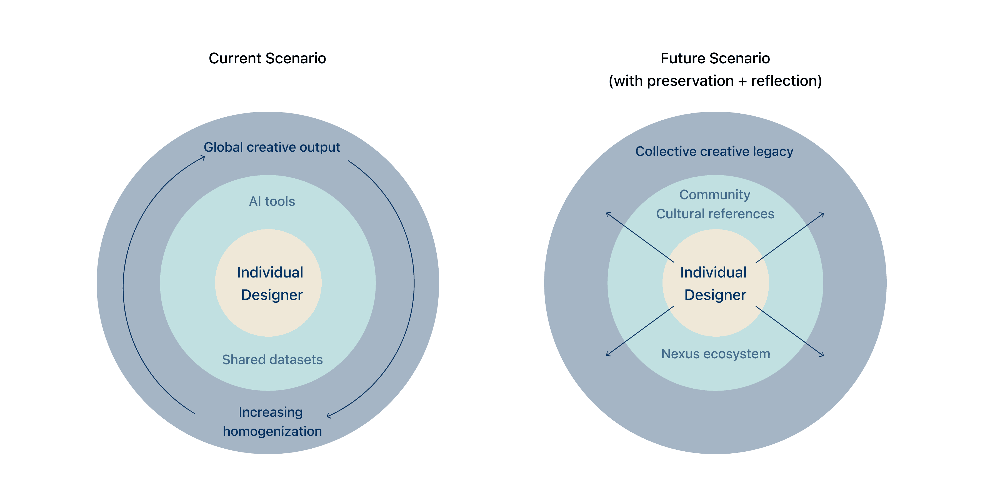

Nexus
An interactive platform that helps designers rediscover originality through culture — connecting creativity, community, and design beyond the algorithm.
↓Skip to solutionContext
We’re creating faster than ever, but everything is starting to look the same. A 2024 study found that as AI boosted productivity by 25%, originality in design dropped just as fast.
Designs began to merge: the same compositions, the same color palettes, the same ideas repeated in slightly different forms. Researchers call this a “digital monoculture,” where bias and data repetition quietly reshape creativity.
If this continues, design risks reflecting algorithms and trends more than it reflects people, culture, or stories.
Where we began
How might we help designers recognize their individuality, and design from culture instead of conformity?
We started by exploring inspiration, community, culture, and creativity. Our goal: help designers understand the meaning behind their choices, instead of replicating what already exists.
When we took on the prompt “Designing Beyond Our Lifetime,” we couldn’t ignore AI. It makes design faster and more accessible, but it also risks erasing originality. We didn’t want to reject AI — we wanted to redefine its role. AI should support exploration, not take over creativity.
We focused on emerging designers and creatives who want to think independently and find originality beyond AI-generated trends.

What we found
What keeps the spark alive — the X factor that makes design human?
We studied how designers currently explore creative resources. That pushed us past the design process itself, into its ripple effects: how one designer’s choices today might shape someone else’s work a hundred years from now.
We looked at what makes creative expression human: personal anecdotes, quirks, personality, lived experience.
“It was very thoughtful to think of a way that AI could supplement not augment human creativity. So often, people use AI as an easy button, but your concept allows designers to actually express themselves and do some introspection as they grow and develop.”
— Design-a-thon JudgeSolution
If AI shapes the present, culture preserves the future.
We sketched four user flows that let designers tap into the creative legacy of different communities — either by exploring freely or searching for specific interests. Users can showcase their own design stories, while AI helps surface ideologies and cultural values they hadn’t considered.
We merged these flows into one coherent experience, then translated our sketches into medium fidelity wireframes: exploring works, learning the cultural values behind them, and seeing how their own creative voice is shaped by ideology. Helping designers trace the lineage of design means teaching them to learn from ideologies, not just replicate aesthetics.
01 — Rediscover inspiration beyond the algorithm
02 — See how your creative identity connects to broader cultural narratives
03 — Add your story to the collective creative tapestry
Next steps
One judge noted they’d love to see deeper AI–human interaction — rather than a user simply annotating inspiration with images, an AI could prompt them with questions, accepting voice or text as input. That kind of reflective dialogue feels like the natural next layer: an AI that asks why something resonates, not just catalogues what you saved. Nexus could grow from a discovery board into a genuine creative journal.
Over the next decades, AI systems will keep learning from creative work. Nexus helps preserve the cultural context behind that work, so the perspective, values, and authenticity stay intact for whatever technology learns from them next. In fifty or a hundred years, the datasets that train creative systems could carry these voices forward — teaching technology to remember not just what we made, but why we made it.
Takeaways

By encouraging cultural exploration and self-reflection, Nexus reduces reliance on AI-generated trends and re-centers human intent in the creative process. This helps designers think critically, create consciously, and express their individuality more effectively.
As people become more informed creatives, shared cultural knowledge stays alive instead of getting lost in trends — making room for more representation in design overall. Winning visual design under a 48-hour clock taught me a lot about decisive craft, and about what happens when a team cares deeply about the why behind a prompt.
See next